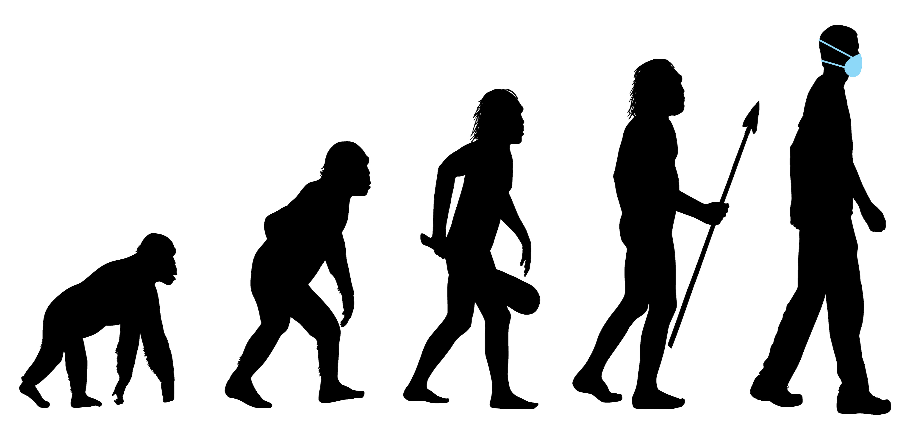
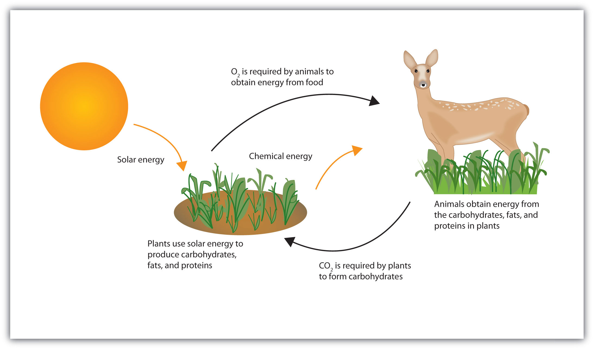
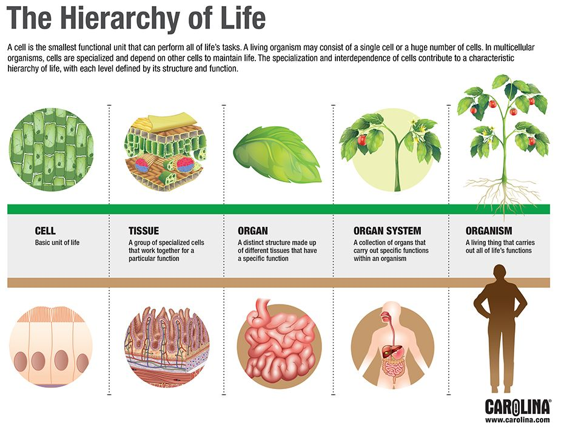
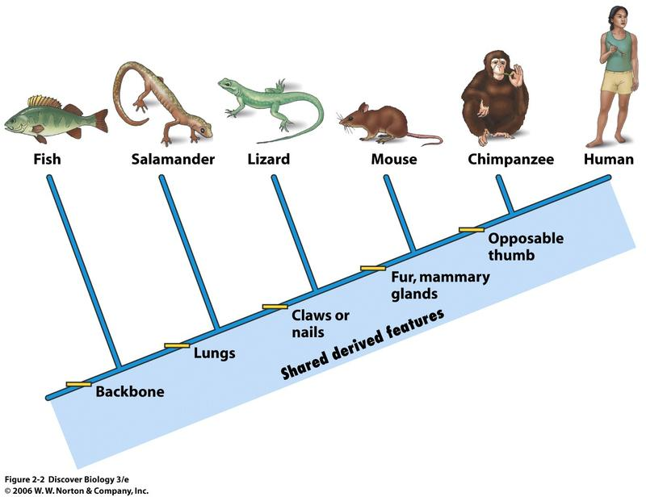

Unifying Themes as the Foundation in the Study of Biology
Topic 3
Introduction
The concept of undying themes in biology refers to the fundamental principles and concepts that are essential for understanding the diversity and complexity of life on Earth. These themes serve as the foundation for the study of biology and provide a framework for investigating and explaining the processes and relationships that govern living organisms. Some of the undying themes in biology include:
Evolution
The theory of evolution by natural selection is a central theme in biology, explaining the diversity of life and the mechanisms by which species change over time
(reference: today.ku.edu)
Structure and Function
The relationship between the structure of biological systems and their function is a key theme in biology. Understanding the structure-function relationship allows biologists to study how organisms function and adapt to their environments.
(reference: by MooMooMath and Science)
Energy and Matter
The flow of energy and cycling of matter are essential processes in living organisms. Understanding how organisms acquire, use, and transfer energy and matter is crucial for understanding their functioning and ecological interactions.
(reference: flatworldknowledge.lardbucket.org)
Information Flow
Information flow is critical for the functioning of living systems. From the molecular level to the cellular and organismal levels, the transmission and processing of information are central themes in biology.
(reference: www.carolina.com)
Systems and Interactions
Biological systems are characterized by complex interactions among their parts. The study of these interactions, from the cellular to the ecosystem level, is a fundamental theme in biology.
(reference: by systems biology)
Unity and Diversity
Despite the immense diversity of life on Earth, there is a fundamental unity among living organisms. The study of the shared traits and common ancestry among organisms is a central theme in biology.
(reference: southernbio.weebly.com)
Conclusion
These undying themes provide a framework for biologists to explore and understand the complexity and interconnectedness of life on Earth. By addressing these themes, biologists can gain a deeper understanding of the natural world and the processes that govern living organisms.